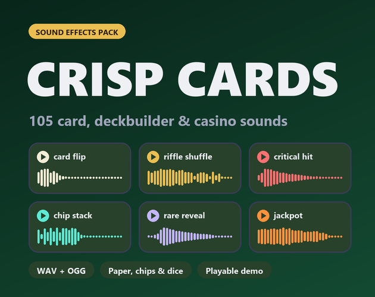

Crisp Cards: 105 card game, deckbuilder and casino sound effects
Crisp Cards is a pack of 105 sound effects for card games, deckbuilders and casino tables: flips, deals, shuffles, hits, blocks, chips, dice, roulette and the menu sounds in between.

- Contents
- 105 sounds in 10 folders
- Formats
- WAV (44.1 kHz, 16-bit, stereo) and OGG Vorbis
- Price
- $4.99 on itch.io (anipixels.itch.io/crisp-cards)
- Free sampler
- 20 sounds, free on itch.io (anipixels.itch.io/crisp-cards-free)
- Licence
- Royalty-free for commercial and non-commercial projects, no credit required, no reselling or redistribution of the files
- Made by
- Anipixels, with procedural code written with an AI assistant (Claude)
What is included
- Cards (21) - flip, deal, slide, draw, place/play, pick up, hover lift, discard
- Deck (7) - riffle shuffle (with bridge and squaring), overhand shuffle, fan out, empty deck thud
- Card Magic (6) - burn/destroy crackle, upgrade shimmer, enchant, rare reveal, legendary reveal
- Combat (15) - light and heavy hits, critical hit, block gain, block hit, shield break, enemy intent, enemy death
- Status (11) - heal, buff, debuff, poison tick, energy gain, out of energy
- Turns & Stingers (4) - turn start, turn end, victory fanfare, defeat
- Chips (9) - single chip clack, stack, pile push, bet placed
- Dice & Coins (9) - dice shake, dice roll, dice land, coin flip, coin land/spin-out
- Roulette & Wins (7) - roulette spin with ball drop, wheel ticks, jackpot, small win, lose
- UI (16) - buttons, hovers, confirm, cancel, not enough energy, reward appear/choose, gold gain, shop buy, map select
Details
- 105 sounds in 10 folders.
- Variations (_01, _02, _03) for the sounds you hear constantly (flips, deals, draws, hits, chips, dice), so a dealt hand does not sound robotic.
- card_hover and ui_hover are quiet on purpose, because they fire constantly.
- shuffle_riffle ends with the deck being squared on the table; shuffle_overhand is the quicker one.
- turn_start, turn_end, victory, defeat, jackpot and lose are tuned stingers (C major / C minor), in key with each other.
Formats and engines
- WAV: 44.1 kHz, 16-bit, stereo (for editing and highest quality).
- OGG Vorbis: small files, ready for Godot, Unity, GameMaker and web.
- Every sound is loudness-matched, starts on its first sample (no dead air) and peaks at or below -1 dBFS.
Works with: Any engine or tool that plays WAV or OGG files. The pack's README names Godot, Unity, GameMaker and web.
Free sampler
The free sampler has 20 of the 105 sounds as WAV and OGG: card flip, deal, draw, place, hover, riffle shuffle, card burn, rare reveal, light hit, block, heal, energy gain, turn start, victory, chip clack, chip stack, dice roll, roulette spin, jackpot and confirm.
The free itch.io page also hosts the playable browser demo of the full pack.
Licence
Use the sounds in any number of commercial or non-commercial projects (games, apps, websites, videos, streams, game jams). Edit, layer, pitch or otherwise modify them. Credit is appreciated but never required. You may not resell, redistribute or give away the sounds themselves, on their own or as part of another sound library or asset pack, modified or not, and you may not claim them as your own original work in a sound library.
This is a summary of the LICENSE.txt inside the download. The sampler's copy of that file: crisp-cards.txt.
Questions
Can I use Crisp Cards in a commercial game?
Yes. The licence allows any number of commercial or non-commercial projects: games, apps, websites, videos, streams and game jams.
Do I have to give credit?
No. Credit is appreciated but never required.
Which engines does it work with?
Any engine or tool that plays WAV or OGG files. The pack's README names Godot, Unity, GameMaker and web.
Can I edit the sounds?
Yes. You may edit, layer, pitch or otherwise modify them.
Can I try it before buying?
Yes. The free itch.io page has a playable browser demo and a free sampler with 20 of the 105 sounds as WAV and OGG. The same 20 sampler files can be played on this site's UI sound board.
Was AI used to make it?
Yes, for the code. Every sound is synthesised from scratch by code that was written with Claude, an AI assistant. No recorded samples and no AI audio-generation models were used.
Screenshots


How it was made
Every sound is synthesised from scratch by code that was written with Claude, an AI assistant. No recorded samples and no AI audio-generation models were used.
Crisp Cards is part of the Crisp Everything Bundle: all 14 Crisp packs for $19.99 instead of $81.86 bought one by one. View the bundle on itch.io